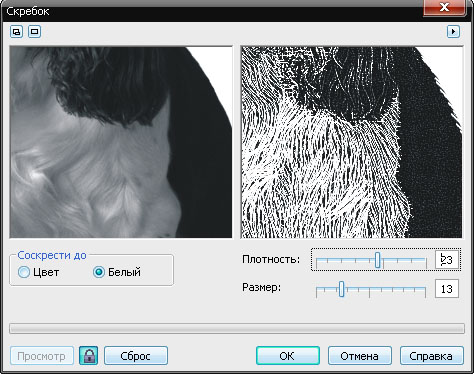
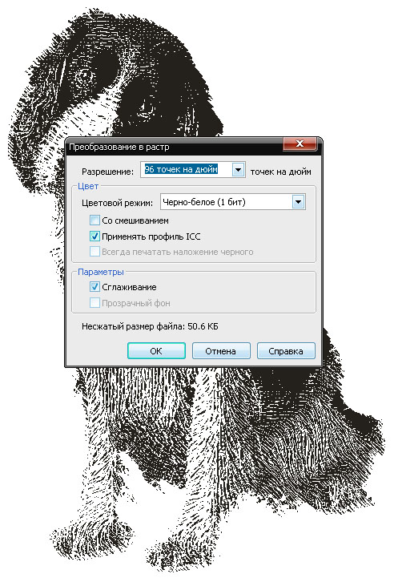

Создание векторной гравюры из расстрового изображения
Несомненно, красивее и богаче смотрится гравюра, выполненная вручную.
Но если нет времени и умения в рисовании подобного — Corel в помощь.
Картинка для примера
Переводим картинку в оттенки серого.
Применяем художественный мазок — Скребок
Эксперементируем с плотностью и размером скребка до желаемого результата.

Преобразуем изображение в битовое.
P.S. Почему два раза преобразуем?
Потому-что с битовым изображением не работает скребок.
А трассировка серого изображения сопровождается ненужными элементами оттенков серого.

Трассируем
В Элементах управления трассировкой я сделал: деталь на максимум, а сглаживания — по нулям
Результат
Строго не судите за результат. Я показал принцип, а так всё в Ваших руках.
Повторюсь, такие вещи надо рисовать вручную :)
Всем удачи и творческих успехов.
Всё таки лучще использовать специализированный софт http://www.vectools.com/en/StrokesMaker1.aspx